到手测试
普通TTL/232接口的串口屏
目前淘晶驰的标准品接口有2种，一种是XH2.54*4
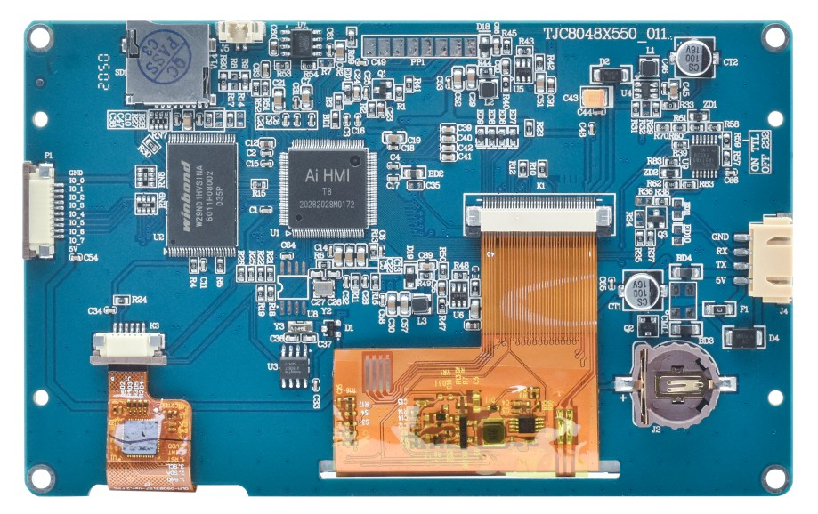

FPC软排接口
另一种是FPC软排接口， FPC 1.0*14，常见于T1、X2系列中的FPC版本
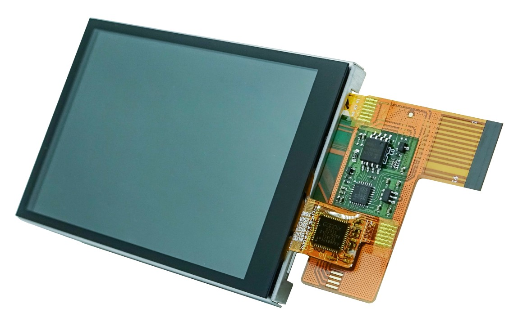
引脚的顺序如图所示，T1与X2的引脚顺序和引脚定义是一致的
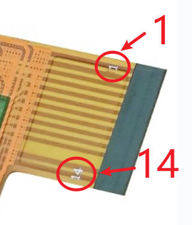
FPC 1.0*14接口定义如下，正常情况下，仅需接以下6个引脚到您的单片机即可
序号 |
引脚 |
备注 |
1 |
GND |
接单片机GND |
2 |
GND |
接单片机GND |
3 |
||
4 |
||
5 |
||
6 |
UART_RXD |
接单片机TX |
7 |
UART_TXD |
接单片机RX |
6 |
||
7 |
||
8 |
||
9 |
||
10 |
||
13 |
VDD |
接3.3V供电 |
14 |
VDD |
接3.3V供电 |
完整的定义如下
序号 |
引脚 |
备注 |
1 |
GND |
接地 |
2 |
GND |
接地 |
3 |
NRST |
模组复位，低电平有效，可悬空 |
4 |
NC |
工厂测试引脚，必须悬空 |
5 |
NC |
工厂测试引脚，必须悬空 |
6 |
UART_RXD |
接单片机TX |
7 |
UART_TXD |
接单片机RX |
8 |
TF_CS |
外接TF卡 |
9 |
TF_MOSI |
外接TF卡 |
10 |
TF_SCK |
外接TF卡 |
11 |
TF_MISO |
外接TF卡 |
12 |
BEEP * |
蜂鸣器输出，可悬空 |
13 |
VDD |
接3.3V供电 |
14 |
VDD |
接3.3V供电 |
注意
No.12 beep引脚 注:部分型号支持，目前仅T1系列使用HMI C2芯片的版本支持
FPC 1.0*14可以通过转接板转换为XH2.54*4
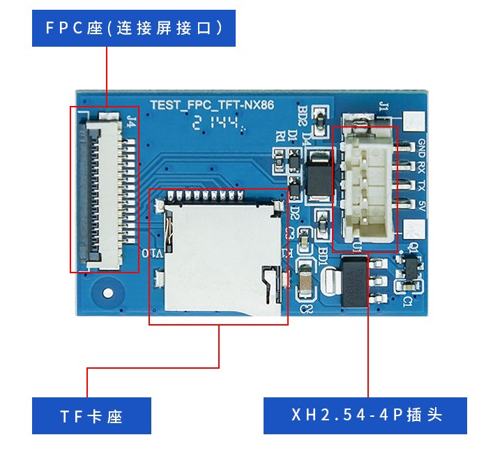
485接口的串口屏
除此之外还有一款x5 4寸宽电压版本，将后盖打开，里面也是 XH2.54*4
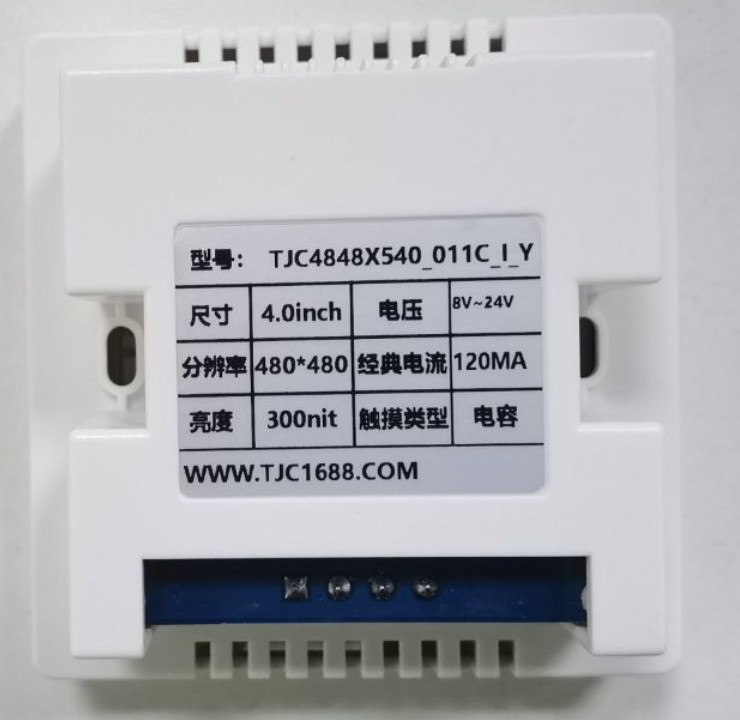
x5 4寸宽电压版本是485接口，必须将485背板取下才能通过官方上位机（USART HMI）用ttl进行下载，如果在485模式下，用官方上位机（USART HMI）会无法下载。
需要先通过上位机（USART HMI）导出tft文件（左上角文件-输出生产文件），然后使用TFT文件下载助手(TFTFileDownload)才能通过485进行下载
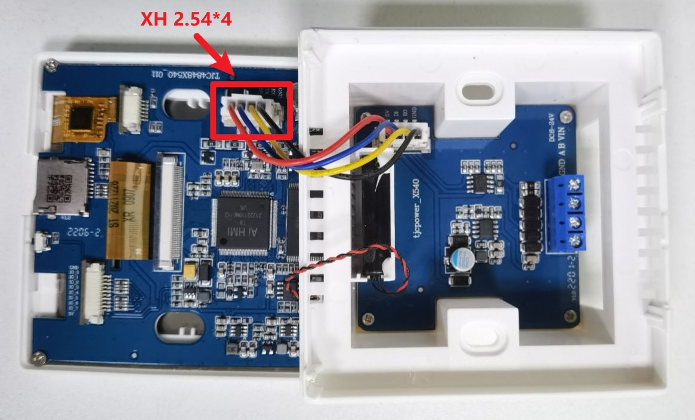
相关链接
x5 4寸宽电压版本背部接口接口定义如下
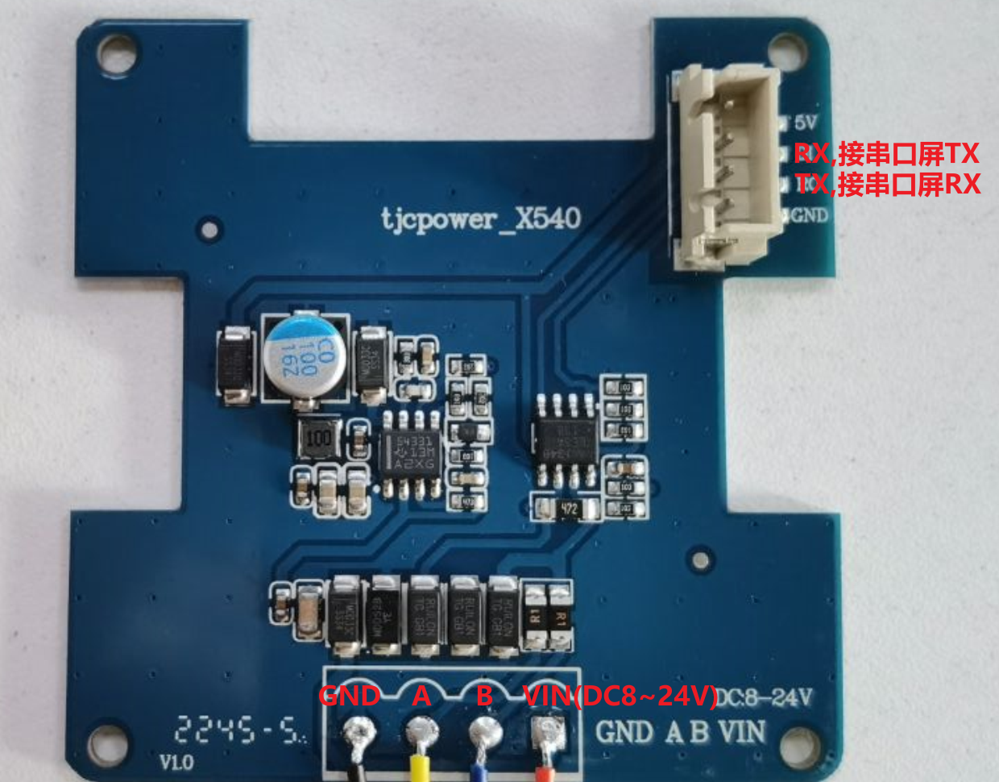
USB转TTL工具
建议使用官方的供电和下载工具

注意
如果您购买的屏大于5寸或者有使用喇叭的需求，请再购买一个12V电源用于额外供电，否则可能因为电脑USB供电不足导致开机启动失败
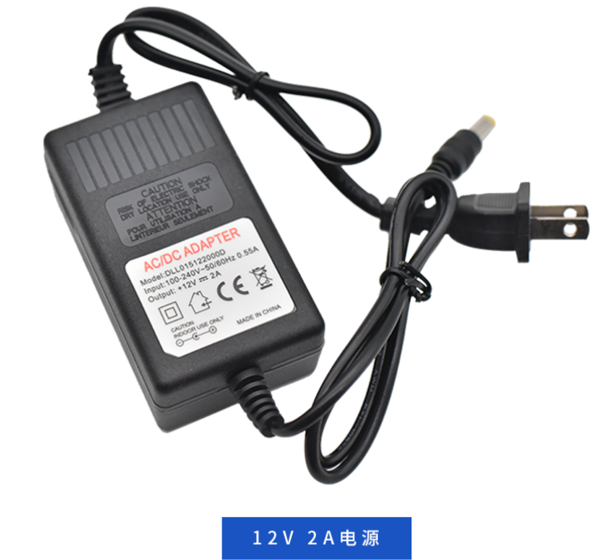
备注
连接方式如下所示
5V接串口屏5V
单片机TX接串口屏RX
单片机RX接串口屏TX
GND接串口屏GND
TX是Transmit（发送），RX是Receive（接收），发送对接收，接收对发送。
另外说明：有些板子和原理图标注的是TXD和RXD。TX就是TXD，RX就是RXD。概念都是一样的，可以不做区分。
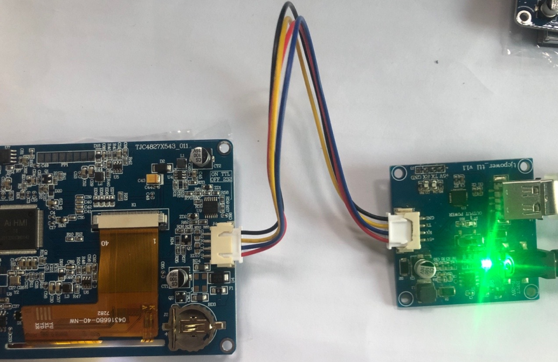
上电后请确保开关的位置如下图所示（朝向4pin接口）
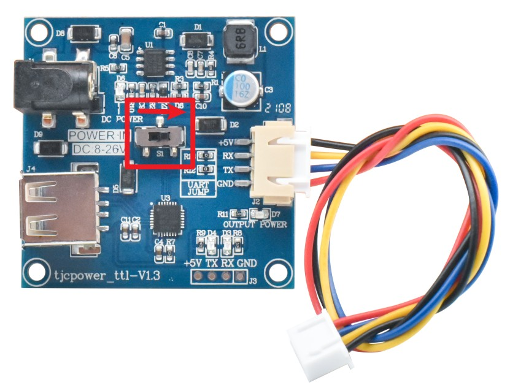
上电后应显示开机界面
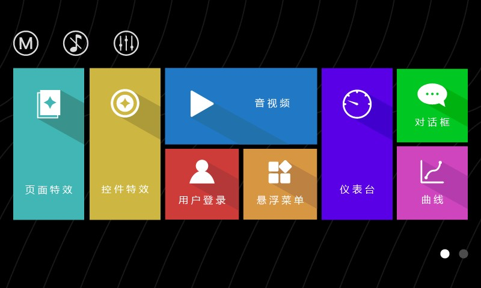
其他相关链接